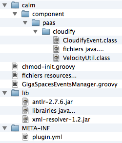

ALIEN plugins
An ALIEN plugin is a zip archive that contains the following structure:
Directory hierarchy
An ALIEN plugin is an archive (zip) that must contains the following hierarchy:
- The root folder contains java classes and resources (basically it will be added to the classpath of the plugin).
- The lib folder (optional) must contain all java archives (jar) required for the plugin to run. They will be added to the plugin classloader. Of course you should not add ALIEN 4 cloud jars here as they will be loaded through the plugin parent classloader.
- Finally the META-INF/plugin.yml contains the plugin description and entry point informations (the plugin descriptor).

Example of a plugin content.
The plugin descriptor
The plugin descriptor is mandatory and is the entry point of the plugin for ALIEN. As many other configuration elements it is a YAML file that allows to describe your plugin.
grammar
As detailed in the architecture section, a ALIEN plugin is actually a Spring sub-context; As so it requires a Spring context configuration entry point. For ALIEN plugins we have decided to allow only java based configuration and thus a plugin must specify a configuration class in it’s descriptor. The configuration class is the only mandatory class in a plugin so it can be loaded by ALIEN.
example
Plugin context entry point
As described higher, a plugin in ALIEN is a spring context that inherits from ALIEN context. This allows you to build plugin that have full access to the repository or any other component in ALIEN.
When loading a plugin, ALIEN for cloud will create the spring context based on the spring java configuration class defined in the plugin descriptor. It will then lookup the spring context for plugin beans matching one of a supported plugin type (like a bean that implements IPaaSProvider for example).
Below is an example of a plugin spring context java configuration that acts as an entry point for the cloudify plugin.
@Configuration
@ComponentScan("alien.paas.cloudify")
@ImportResource("classpath:properties-config.xml")
public class PluginContextConfiguration {
}Plugin configuration
ALIEN provides an easy way to configure a plugin by generating the UI based on a configuration object using introspection. It also manages persistency of the configuration.
In order to enable plugin configuration, one of the bean in your spring context must implements the IPluginConfigurator
/** Interface for plugin configuration objects. */
public interface IPluginConfigurator<T> {
/**
* Get an instance of T that is the default configuration object of the plugin.
*
* @return A configuration object of type T.
*/
T getDefaultConfiguration();
/**
* Set / apply a configuration for a plugin.
*
* @param configuration The configuration object as edited by the user.
*/
void setConfiguration(T configuration);
}Current version of ALIEN 4 Cloud does not supports more than a single configuration. Thus you should make sure that a single IPluginConfigurator exists in your plugin spring context.